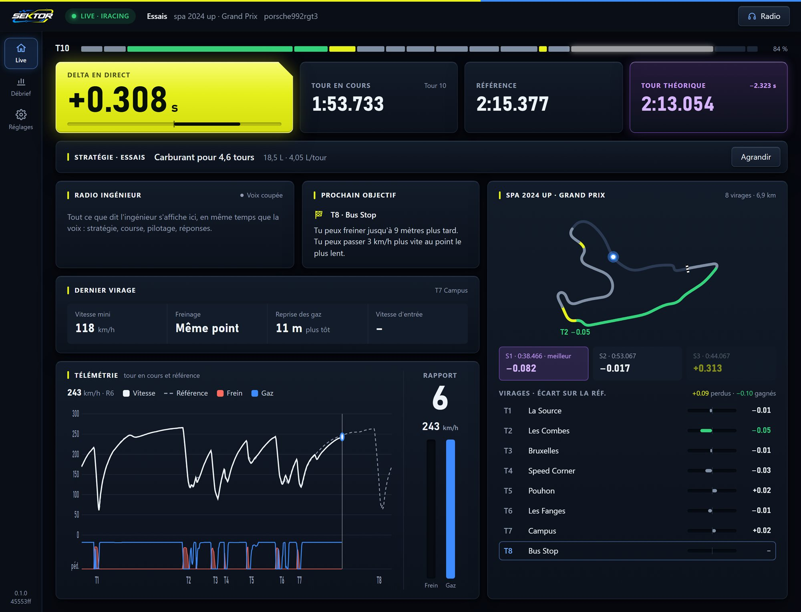
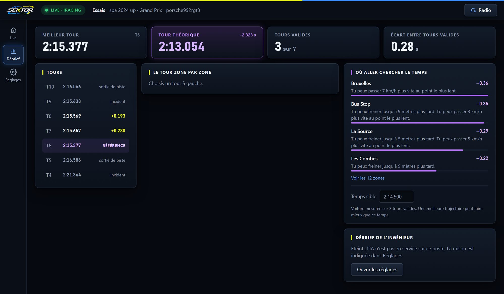
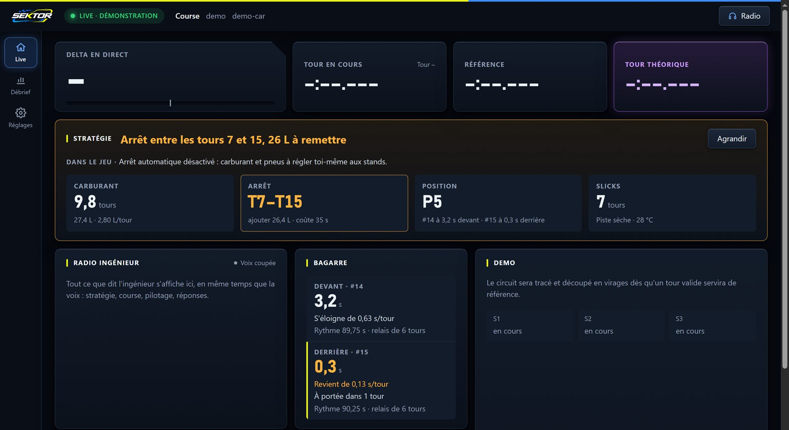

Chaque dixième perdu a une adresse.
SEKTOR compare chaque passage à ton meilleur tour, virage par virage, et te dit à la voix où tu as perdu du temps et comment le reprendre. En course, il tient la stratégie : carburant, arrêt, bagarre, pneus, pluie.
Bus Stop
+0.21Tu freines 9 mètres avant ta référence. Tu passes 3 km/h moins vite au point le plus lent.

L'écran Live, en essais à Spa en Porsche 911 GT3 R : capture réelle, rejouée depuis un fichier de télémétrie iRacing.
d'écart au plus avec les chronos d'iRacing, mesuré sur 8 tours.
de traitement en moyenne par relevé de télémétrie.
circuits aux virages nommés : 271 tracés iRacing et 6 de Le Mans Ultimate.
lectures de tout le plateau en course : carburant, écarts, piste, pneus.
Ton meilleur tour devient ton professeur.
Boucle un tour propre : il devient ta référence et le circuit est découpé en virages. Dès le tour suivant, chaque passage est mesuré face à elle, et SEKTOR te dit ce qui a changé, en mètres et en km/h.
Delta en direct
L'écart à ta référence, rafraîchi en continu, avec une jauge de ±0,5 s et la barre du tour en couleurs : où tu gagnes, où tu perds.
Dernier virage, prochain objectif
Freinage, vitesse au point le plus lent, remise des gaz, vitesse d'entrée : chaque virage est comparé à ta référence, et le suivant te dit où aller chercher le temps.
Télémétrie face à la référence
Vitesse, frein et gaz du tour en cours superposés à ceux de ta référence, avec le rapport engagé et la position de la voiture sur la carte.
Overlay par-dessus le jeu
Le delta et le message du coach s'affichent en jeu, dans un panneau que tu déplaces et redimensionnes (Ctrl Alt O).
La Source
+0.21Tu freines 12 mètres avant ta référence. Tu passes 5 km/h moins vite au point le plus lent.
Ligne droite après Les Combes
−0.19Tu l'abordes 4 km/h plus vite que ta référence.
Campus
−0.05Même point de freinage. Tu remets les gaz 11 mètres plus tôt.
Les messages citent le virage par son nom et ne parlent jamais pendant un freinage.
Ce que ta voiture sait faire, sur ta trajectoire.
Après chaque tour valide, SEKTOR mesure la voiture : adhérence en virage et au freinage selon la vitesse, accélération à pleine charge. Puis il simule ta trajectoire à cette limite. Le résultat : un chrono, et virage par virage, la marge qu'il te reste.
−2,323 s à aller chercher, Porsche 911 GT3 R à Spa, voiture mesurée sur 3 tours.
Tu peux passer 7 km/h plus vite au point le plus lent.
Tu peux freiner jusqu'à 9 mètres plus tard.
Tu peux freiner jusqu'à 5 mètres plus tard.
Le tour théorique garde ta trajectoire. Une meilleure ligne peut faire mieux : saisis un temps cible (un record, le tour d'un pilote rapide) pour séparer ce qui est à ta portée de ce qui reste à chercher dans la ligne ou le réglage.

Quand rentrer, combien remettre, où tu ressors.
Pendant la course, SEKTOR lit six fois par seconde le carburant, les positions de tout le plateau, l'état de la piste et les pneus. Il en tire les décisions qu'un ingénieur prendrait au muret.

En course : la fenêtre d'arrêt, le carburant, la position et la bagarre avec les voitures devant et derrière.
La fenêtre d'arrêt
Consommation mesurée sur tes tours propres, tours restants, premier et dernier tour possible pour s'arrêter, litres à remettre. Une marge d'un demi-tour est gardée.
Économiser ou s'arrêter
Quand il manque peu de carburant, l'économie est chiffrée et comparée à l'arrêt.
Ressortir en piste libre
Ta position à la sortie des stands si tu t'arrêtais maintenant, et le meilleur tour pour rentrer sans ressortir dans les échappements d'une autre voiture.
Le bon moment pour attaquer
Ton rythme en pneus neufs face à celui de la voiture de devant qui doit encore s'arrêter.
Devant, derrière
Chaque voiture est chronométrée en cent points du tour, comme par les boucles d'un vrai circuit : l'écart réel, ce qu'il devient à chaque tour, et dans combien de tours elle est à portée.
Usure et pluie
Perte au tour face aux meilleurs tours du même train, humidité de la piste et tendance, nombre de tours avant les pneus pluie ou le retour en slicks.
Un seul ingénieur. Il parle quand tu peux l'écouter.
Stratégie, bagarre, pilotage, réponses à tes questions : tout passe par la même radio, d'une seule voix, le chiffre d'abord.
En ligne droite seulement
Jamais dans un virage ni juste avant un freinage. Seule une décision urgente, rentrer ce tour ou passer en pneus pluie, passe partout.
Il s'efface quand tu te bats
À moins de deux secondes d'une autre voiture, plus de conseil de pilotage. À moins d'une seconde, plus que les décisions.
Pose-lui ta question
Maintiens Ctrl Alt I et parle : « combien de tours de carburant ? », « je ressors où si je rentre maintenant ? ». Les questions courantes ont une réponse immédiate, même sans IA.
iRacing et Le Mans Ultimate, en même temps.
SEKTOR écoute les deux : le premier lancé a la main. Tes références sont enregistrées par simulateur, circuit et voiture, et rechargées dès que tu reprends la piste.
iRacing
Rien à régler : lance le jeu, SEKTOR se connecte.
- Virages nommés sur 271 tracés, d'après les repères de Crew Chief.
- Stratégie complète : carburant, arrêts du plateau, undercut, pluie, dégradation.
- Chronos fidèles : 2,1 ms d'écart au plus avec ceux du simulateur.
Le Mans Ultimate
Active « Enable Plugins » dans les réglages du jeu. Aucun plugin à installer.
- Énergie virtuelle en Hypercar et en GT3 : le relais est calé sur la première ressource épuisée, carburant ou énergie.
- Usure des pneus en direct, pneu par pneu, avec une alerte trois tours avant la limite.
- Limites de piste : chaque point pris est annoncé, avec ce qu'il reste avant la pénalité.
Ta télémétrie reste chez toi.
Tout le calcul en local
Coaching, tour théorique et stratégie tournent sur ta machine. Pas de compte en ligne, pas d'abonnement.
L'IA ne voit que des chiffres
Le débrief et le point du tour envoient le circuit, la voiture, tes chronos et tes écarts. Jamais ton nom ni celui des autres pilotes.
Micro sous ton contrôle
Ta voix n'est enregistrée que pendant que tu maintiens la touche, 30 secondes au plus.
Une licence discrète
Le serveur de licences ne reçoit que ta clé, une empreinte de l'ordinateur et le numéro de version. Ensuite, SEKTOR marche hors ligne.
En piste en trois étapes.
Télécharge
Prends l'installateur SEKTOR_…_x64-setup.exe dans la dernière version publiée.
Windows 10 ou 11, 64 bits. Rien d'autre à installer.
Installe
L'installateur n'a pas encore de certificat Windows : au premier lancement, SmartScreen prévient. Clique sur « Informations complémentaires », puis « Exécuter quand même ».
Active et roule
Saisis ta clé de licence au premier lancement, puis lance iRacing ou Le Mans Ultimate. Boucle un tour propre : le coaching commence au suivant.
Mises à jour automatiques
SEKTOR signale lui-même les nouvelles versions et les installe sur un clic. Une mise à jour n'est installée que si sa signature est vérifiée.
Questions fréquentes
Faut-il une connexion pendant que je roule ?
Non. La licence est confirmée en ligne au lancement, puis une fois par jour ; elle reste valable sept jours hors ligne. Le coaching, le tour théorique et la stratégie tournent sur ton PC. Seules les fonctions d'IA (débrief rédigé, point du tour, questions dictées) et la voix en ligne ont besoin d'Internet ; sans elles, la voix de Windows prend le relais.
Comment obtenir une clé de licence ?
SEKTOR est en phase de test : les clés sont délivrées aux testeurs. Une clé vaut pour un ordinateur ; si tu changes de machine, elle peut être libérée.
Est-ce que ça marche avec toutes les voitures et tous les circuits ?
Oui. La référence est enregistrée par simulateur, circuit et voiture. Les virages portent leur nom sur 271 tracés iRacing et 6 circuits Le Mans Ultimate ; ailleurs, ils sont numérotés.
Je joue en plein écran : je verrai l'overlay ?
Pour voir l'overlay par-dessus le jeu, joue en fenêtre sans bordure plutôt qu'en plein écran exclusif. Le dashboard, lui, s'affiche dans sa propre fenêtre, par exemple sur un second écran.
Je peux parler à l'ingénieur avec un bouton du volant ?
Les touches se changent dans les réglages (par exemple F13 ou Maj F9). Associe ton bouton à cette touche avec le logiciel du volant ou un outil comme JoyToKey.
Le tour théorique, c'est le record du circuit ?
Non : c'est ta trajectoire, roulée à la limite de ta voiture telle qu'elle a été mesurée sur tes propres tours. Il s'affine à mesure que les tours valides s'accumulent. Pour viser plus loin, saisis un temps cible.
Ton meilleur tour sait déjà où tu perds du temps. SEKTOR te le dit, au bon moment.